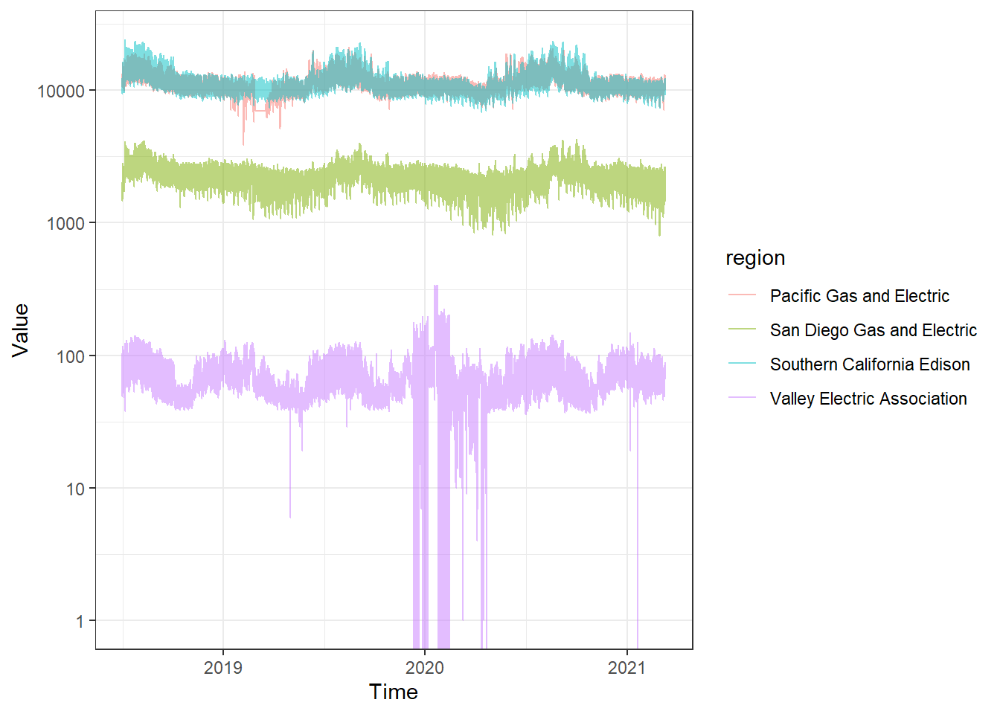
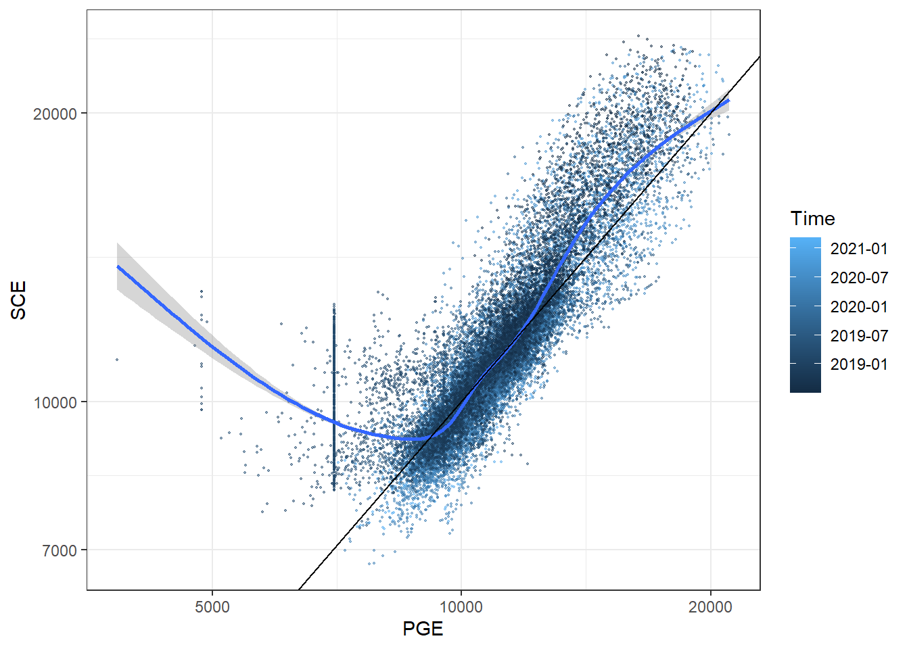

5 Midterm Exam
Your task is to forecast electricity demand in California. To do this, we are going to use the U.S. Energy Information Administration open data source that records hourly electricity demand. To do this, you will need to do the following:
- Register for an API key here: (https://www.eia.gov/opendata/). This took me under 10 minutes.
- Make sure you have the following libraries installed in R:
- tidyr
- dplyr
- jsonlite
- lubridate
- Run the following script:
key<-"YOUR-KEY-HERE"
library(tidyr)
library(dplyr)
library(jsonlite)
library(lubridate)
urlCategories<-paste0("http://api.eia.gov/category/?api_key=",key,"&category_id=3390016")
Regions <- ( urlCategories
%>% readLines()
%>% jsonlite::fromJSON()
)
RegionList<-Regions$category$childcategories
print(RegionList)
# Just California
url<-paste0("http://api.eia.gov/category/?api_key=",key,"&category_id=3390291")
RegionData<-url %>% readLines %>% jsonlite::fromJSON()
RegionList<-RegionData$category$childseries
DownloadThese<-grepl("UTC",RegionList$name,fixed=TRUE)
CAElectricityData<-tibble()
for (ii in 1:length(DownloadThese)) {
if (DownloadThese[ii]) {
url<-paste0("http://api.eia.gov/series/?api_key=",key,"&series_id=",RegionList$series_id[ii])
D<-(url %>% readLines %>% jsonlite::fromJSON())
tmp<-D[["series"]][["data"]][[1]] %>% data.frame()
colnames(tmp)<-c("Time","Value")
tmp$region<-D$series$name
CAElectricityData<-rbind(CAElectricityData,tmp)
}
}
CAElectricityData <- CAElectricityData %>% mutate(Time = as_datetime(ymd_h(substr(Time,1,11))))
write.csv(CAElectricityData,"20201S/CAElectricityData.csv")You can then load the data and clean it up a bit as follows:
library(tidyr)
library(dplyr)
library(ggplot2)
library(lubridate)
library(stringr)
D<-(read.csv("CAElectricityData.csv") %>% data.frame()
)
r<-strsplit(D$region,", ") %>% unlist() %>% matrix(ncol=3,byrow=TRUE)
D$region<-r[,2]
D$Time<-D$Time %>% as_datetime()
D %>% sample_n(15) %>% knitr::kable()| X | Time | Value | region |
|---|---|---|---|
| 36117 | 2019-10-05 13:00:00 | 9394 | Southern California Edison |
| 14553 | 2019-07-13 13:00:00 | 10715 | Pacific Gas and Electric |
| 93717 | 2018-07-26 00:00:00 | 142 | Valley Electric Association |
| 82462 | 2019-11-08 06:00:00 | 54 | Valley Electric Association |
| 76682 | 2020-07-06 08:00:00 | 51 | Valley Electric Association |
| 7023 | 2020-05-22 16:00:00 | 10275 | Pacific Gas and Electric |
| 48418 | 2021-01-17 17:00:00 | 1503 | San Diego Gas and Electric |
| 3210 | 2020-10-28 15:00:00 | 11041 | Pacific Gas and Electric |
| 83227 | 2019-10-07 09:00:00 | 39 | Valley Electric Association |
| 72940 | 2020-12-09 08:00:00 | 68 | Valley Electric Association |
| 83140 | 2019-10-11 00:00:00 | 49 | Valley Electric Association |
| 65075 | 2019-02-22 15:00:00 | 2588 | San Diego Gas and Electric |
| 47491 | 2021-02-25 08:00:00 | 2007 | San Diego Gas and Electric |
| 90078 | 2018-12-24 18:00:00 | 84 | Valley Electric Association |
| 2925 | 2020-11-09 12:00:00 | 8951 | Pacific Gas and Electric |
Each column is as follows:
- X is the row number (not particularly useful)
- Time is the time period for this row, measured in UTC (local time is tricky because of daylight saving).
- Value is the demand for electricity in MWh
- region is the region in California.
5.1 A few plots and manipualtions of the data that might be helpful
(ggplot(D,aes(x=Time,y=Value,color=region))
+geom_line(alpha=0.5)
+theme_bw()
+scale_y_continuous(trans="log10")
)
Going from a long (each row is a time-region pair) to wide (each row shows all regions for a time period):
Uregion<-unique(D$region)
print(Uregion)## [1] "Pacific Gas and Electric" "Southern California Edison"
## [3] "San Diego Gas and Electric" "Valley Electric Association"RegionLabels<-c("PGE","SCE","SDGE","VEA")
D$RLabel<-""
for (rr in 1:length(Uregion)) {
D[D$region==Uregion[rr],"RLabel"]<-RegionLabels[rr]
}
DWide<-(D
%>% dplyr::select(Time,Value,RLabel)
%>% pivot_wider(names_from=RLabel,values_from=Value)
%>% data.frame()
)
DWide %>% sample_n(15) %>% knitr::kable()| Time | PGE | SCE | SDGE | VEA |
|---|---|---|---|---|
| 2019-08-16 19:00:00 | 15473 | 14665 | 1965 | 87 |
| 2019-09-27 09:00:00 | 10828 | 10593 | 2093 | 44 |
| 2020-07-12 20:00:00 | 12874 | 15905 | 2208 | 115 |
| 2018-09-09 22:00:00 | 12353 | 16849 | 2489 | 103 |
| 2019-02-17 07:00:00 | 10455 | 10319 | 2242 | 75 |
| 2020-04-11 21:00:00 | 7846 | 6780 | 1107 | 2 |
| 2018-10-25 11:00:00 | 9397 | 9567 | 1863 | 42 |
| 2021-02-09 00:00:00 | 10670 | 10004 | 1703 | 53 |
| 2018-09-01 00:00:00 | 13975 | 17908 | 3058 | 102 |
| 2020-03-25 07:00:00 | 10121 | 9408 | 1859 | 61 |
| 2020-04-29 14:00:00 | 10137 | 9907 | 1818 | 45 |
| 2018-11-04 15:00:00 | 9602 | 8987 | 1773 | 50 |
| 2019-12-28 15:00:00 | 10383 | 10166 | 2104 | 152 |
| 2020-08-26 07:00:00 | 13332 | 14285 | 2758 | 71 |
| 2020-08-16 07:00:00 | 15634 | 15581 | 2876 | 76 |
(
ggplot(DWide,aes(x=PGE,y=SCE,color=Time))
+geom_point(size=0.4,alpha=0.5)
+geom_smooth()
+geom_abline(intercept=0,slope=1)
+scale_x_continuous(trans="log10")
+scale_y_continuous(trans="log10")
+theme_bw()
)
5.2 Question 1
Produce a forecast for total electricity demand in the four regions, at 1200 local (California) time on the due date of this exam. Tailor your forecast to this incentive structure:
You will be paid $5 if your forecast has the smallest mean squared error out of all submissions.
You must estimate at least one model with each of the following:
- A lag
- A control for hour of the day
- A time trend
That is, if \(\{\hat y_{i,t}\}_{i=1,t=1}^{i=4,t=24}\) are your forecasts, and \(\{ y_{i,t}\}_{i=1,t=1}^{i=4,t=24}\) are the actual realizations of these variables, then this prize will go to the person with the smallest value of: \[ \sum_{i=1}^4\sum_{t=1}^{24}(\hat y_{i,t}- y_{i,t})^2 \]
5.3 Question 2
Produce a forecast for which region out of Pacific Gas and Electric and Southern California Edison will have the greatest demand for each hour between 1200 local (California) time on the due date of this exam, and 1100 local time the next day (inclusive). Tailor your forecast to this incentive structure:
Each of the 24 time periods will be randomly allocated to a student, so that each student has an equal number of time periods. For every time period that you were selected for, if you predict correctly, you will be paid $0.50.
5.4 What I am looking for
For each question, I will am looking for
- At least three models estimated
- An explanation of why you chose these models
- A explanation of which model you selected, and how you selected it, with reference to the incentive structures.
- Your forecasts, an expression of uncertainty for your forecasts, and a short description of how you selected your models and calculated the expression of uncertainty.
5.5 Rules for exam and forecasting competition
- You may use any static resource available to you, including, but not limited to textbooks, online content, and so on.
- You may not communicate with anyone about these questions. This includes talking to students, friends, professors (except Dr. Bland) about the exam, emails, and posting on discussion boards (although feel free to read them).
- Your forecasts should not use any data other than the data scraped into CAElectricityData.csv. If the incentives were stronger, I would be importing data on electricity prices/futures, weather forecasts and weather data, and so on. This rule is here to burn that bridge: just focus on this dataset.
- If you have any questions about anything to do with this exam and/or the forecasting competition, please communicate them to Dr. Bland. He will post the question and his answer on Blackboard so that all students can see them.
- Grades for the exam will benot be a function of your success, or lack thereof, in the forecasting competition. You are not “competing” for an A. You are competing for cash. There are plenty of As to go around for good work!
- Dr. Bland will transfer your winnings from the forecasting competition electronlically, through your choice of bank transfer, Venmo, Amazon gift card, or any other form of payment that is mutually acceptable.
- You may send me a forecasting script to Dr. Bland at any time to verify that it is returning the forecasts in the right format. He will send you back the two output csv files, and a comment about their format.
- You may use different models, or the same model, for forecasting in Questions 1 and 2.
- Dr. Bland will not be a competitor in the forecasting competition, but he will make his own forecasts.
5.6 Useful resources
- Rstudio cheat sheets, especially for the lubridate package.
- Forecasting: Principles and Practice (2nd ed), by Rob J Hyndman and George Athanasopoulos
5.7 Submitting your forecast for the forecasting competition
Submit your forecast as a script that loads “CAElectricityData.csv” and produces the two csv files. I will run your script on the data downloaded at the start of class (9:35am Toledo time). The csv files should look something like this (using historical averages for this example). I have just sampled 5 rows of each, they will be longer than this:
# QUESTION 1
D %>% group_by(region,hour(Time)) %>% summarize(Forecast=mean(Value)) %>% ungroup() %>% sample_n(5) %>% knitr::kable()
#QUESTION 2
DWide %>% group_by(hour(Time)) %>% summarize(Forecast = ifelse(mean(1*(SCE>PGE))>0.5,"SCE","PGE"))%>% sample_n(5) %>% knitr::kable()